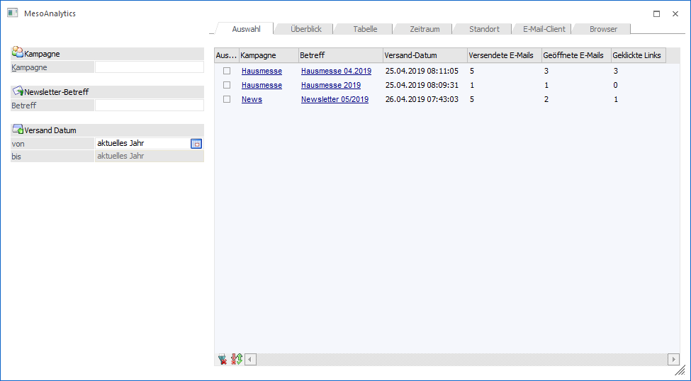
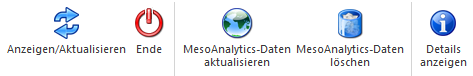

In WinLine START unter dem Menüpunkt
1 CRM
1 MesoAnalytics
ist es möglich zu analysieren, wie "erfolgreich" ein E-Mail-Versand war. Dabei werden unter anderem die Anzahl der geöffneten E-Mails, die Anzahl der angewählten Links usw. protokolliert und können entsprechend in den Detail-Infos ausgewertet werden.
Voraussetzung
Damit MesoAnalytics durchgeführt werden kann, muss man sich in der MesoCloud anmelden bzw. muss zumindest das Modul "WinLine MTA" erworben werden. Zusätzlich muss ein E-Mail-Versand über das Postausgangsbuch mit der Option "MesoAnalytics" durchgeführt worden sein.

Die Analyse untergliedert sich in die folgenden Bereiche:
ü Auswahl
Hier erfolgt die
grundsätzliche Auswahl der zu analysierenden Sendungen.
ü Analyse
Hier erfolgt die
eigentliche Analyse der versendeten E-Mails.
Buttons

Ø Anzeigen/Aktualisieren
Durch Anklicken des Buttons "Anzeigen/Aktualisieren" (bzw. durch das Drücken der Taste F5) werden die MesoAnalytics-Sendungen im Analyse-Bereiche (aufgrund der dort getätigten Selektion) angezeigt, bzw. werden die Spalten "Kampagne", "Betreff" und "Versand-Datum" im Register "Auswahl" gefüllt.
Ø Ende
Durch Anwahl des Buttons "Ende" bzw. der Taste ESC wird das Fenster geschlossen.
Ø MesoAnalytics-Daten aktualisieren
Mit Hilfe dieses Buttons werden für die Sendungen, welche in der Tabelle des Registers "Auswahl" ausgewählt wurden, die Analyse-Daten vom MesoCloud-Server geholt und in die WinLine übertragen. Dafür ist die Anmeldung am MesoCloud-Server notwendig.
Ø MesoAnalytics-Daten löschen
Mit Hilfe dieses Buttons werden die MesoAnalytics-Daten jener Sendungen, welche in der Tabelle des Registers "Auswahl" ausgewählt wurden, in der WinLine und am MesoCloud-Server gelöscht.
Ø Details anzeigen
Dieser Button steht innerhalb des Registers "Auswahl" zur Verfügung. Über ihn werden in der Tabelle die Spalten "Versendete E-Mails", Geöffnete E-Mails" und "Geklickte Links" aktualisiert und gefüllt. Der Button ist in den anderen Registern des Fensters "MesoAnalytics" ausgegraut. Ein vorheriges Selektieren der Tabelleneinträge ist für diese Aktion nicht notwendig.